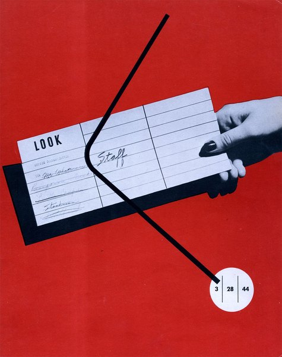
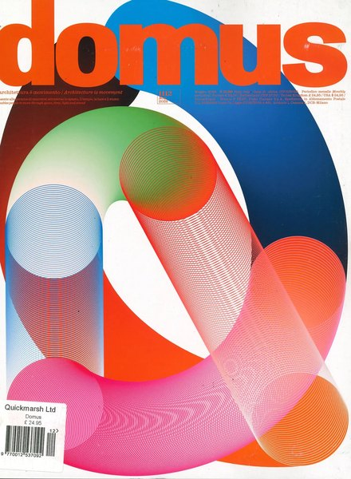
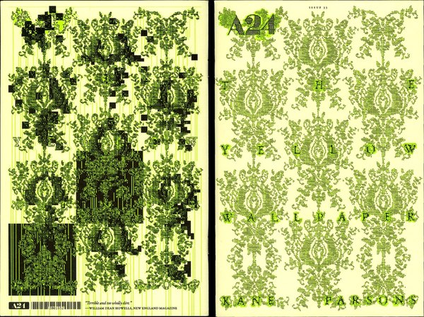
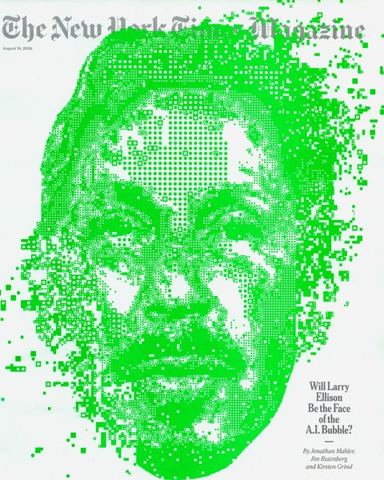
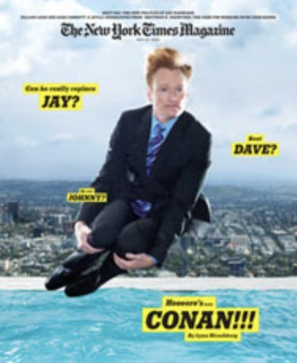
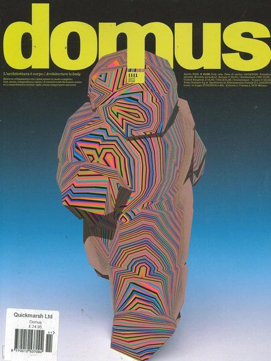
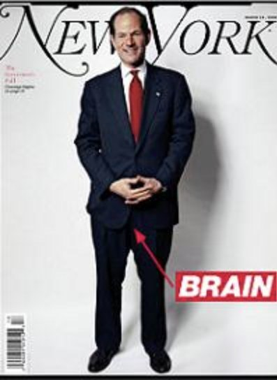
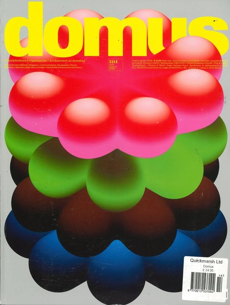

CRVI000837Ottagono - Ottagono 66
settembre 1982 · anno 17 · 1982
settembre 1982 · anno 17 · 1982

CRVI000547Oliver Munday - Who Killed America's Newspapers?
The Atlantic, November 2021 · 2021
The Atlantic, November 2021 · 2021

CRVI000475Justin Metz - The Atlantic, October 2024
The Atlantic October · 2024
The Atlantic October · 2024

CRVI000482Graeme James - War and AI
The Economist, June 22-28, 2024 · 2024
The Economist, June 22-28, 2024 · 2024

CRVI000580Alvin Lustig - Staff
Look magazine staff publication · cover dated 3·28·44 · 1944–45
Look magazine staff publication · cover dated 3·28·44 · 1944–45

CRVI000619Gail Bichler - Is Google Too Powerful?
The New York Times Magazine, February 25 2018 · 2018
The New York Times Magazine, February 25 2018 · 2018

CRVI000534D.W. Pine - Delete 'Facebook'?
TIME, October 25-November 1, 2021 · 2021
TIME, October 25-November 1, 2021 · 2021

CRVI000615D.W. Pine, Tim O'Brien - Stormy
TIME, April 23 2018 · 2018
TIME, April 23 2018 · 2018

CRVI000633D.W. Pine, Edel Rodriguez - Total Meltdown
TIME, October 24 2016 · 2016
TIME, October 24 2016 · 2016

CRVI000644Billy Sorrentino - The End of Code
WIRED, June 2016 · 2016
WIRED, June 2016 · 2016

CRVI000787Paul Rand - Jazzways
A Year Book of Hot Music · 1946
A Year Book of Hot Music · 1946

CRVI000464Richard Turley - The Hedge Fund Myth
Bloomberg Businessweek, 15 July 2013 · 2013
Bloomberg Businessweek, 15 July 2013 · 2013

CRVI000630D.W. Pine, Peter Greenwood - Dear Washington, We Need to Rebuild. Can You Get Your Act Together?
TIME, April 10, 2017 · 2017
TIME, April 10, 2017 · 2017

CRVI000550D.W. Pine - Day One.
TIME, February 1-8, 2021 · 2021
TIME, February 1-8, 2021 · 2021

CRVI000546Emily Kimbro - The 50 Best BBQ Joints
Texas Monthly, November 2021 · 2021
Texas Monthly, November 2021 · 2021

CRVI000840Ottagono - Ottagono 70
settembre 1983 · anno 18 · 1983
settembre 1983 · anno 18 · 1983

CRVI000491Matt Huynh - If Trump Wins
The Atlantic, January/February 2024 · 2024
The Atlantic, January/February 2024 · 2024

CRVI000587Unknown - Mastering the Expense Account Diet
New York, September 1, 1969 · 1969
New York, September 1, 1969 · 1969

CRVI000632Michael Goesele, Justin Metz - Pop Go the Weasels
Newsweek, November 17, 2017 · 2017
Newsweek, November 17, 2017 · 2017

CRVI000512D.W. Pine - Unprecedented.
TIME, April 24/May 1, 2023 · 2023
TIME, April 24/May 1, 2023 · 2023

CRVI000652Unknown - Coke Finally Admits It Has a Fat Problem--And a Plan to Fix It
Bloomberg Businessweek, August 4-10, 2014 · 2014
Bloomberg Businessweek, August 4-10, 2014 · 2014

CRVI000599Unknown - 1977: It All Happened Here. Where Else?
New York, December 26, 1977 · 1977
New York, December 26, 1977 · 1977

CRVI000479Martin Schoeller - The Health Issue
New York, July 15-28, 2024 · 2024
New York, July 15-28, 2024 · 2024

CRVI000847domus - domus 1112
May 2026 · 2026
May 2026 · 2026

CRVI000600Unknown - When Was the Last Time You Called Your Mother?
New York, May 7, 1979 · 1979
New York, May 7, 1979 · 1979

CRVI000676Tom Alberty, Bobby Doherty - The Golden Age of Pods
New York, March 18-31, 2019 · 2019
New York, March 18-31, 2019 · 2019

CRVI000545James Van Fleteren - Build a Better Breakfast Sandwich
EatingWell, May 2021 · 2021
EatingWell, May 2021 · 2021

CRVI000601Unknown - Replacing the Irreplaceable
New York, October 22, 1979 · 1979
New York, October 22, 1979 · 1979

CRVI000605Unknown - What Would Freud Think?
New York, March 31, 1986 · 1986
New York, March 31, 1986 · 1986

CRVI000777Chermayeff & Geismar Associates - Print, September/October 1962
Print XVI:V · 1962
Print XVI:V · 1962

CRVI000554Thomas Alberty - She Has Her Mother's Eyes. And Agent.
New York, December 19, 2022 · 2022
New York, December 19, 2022 · 2022

CRVI000488Stella Ragas - The Takeover
New York, May 6-19, 2024 · 2024
New York, May 6-19, 2024 · 2024

CRVI000607Unknown - Spying on Spy
New York, April 17, 1989 · 1989
New York, April 17, 1989 · 1989

CRVI000848form - form 8
Internationale Revue · 1959 · 1959
Internationale Revue · 1959 · 1959

CRVI000586Unknown - This Machine Swallows Buses While Going 60 mph
New York, February 24, 1969 · 1969
New York, February 24, 1969 · 1969

CRVI000843domus - domus 1109
February 2026 · 2026
February 2026 · 2026

CRVI000624David Plunkert - Blowhard
The New Yorker, August 28, 2017 · 2017
The New Yorker, August 28, 2017 · 2017

CRVI000612Unknown - Scenes From New York's Therapy Crisis
New York, October 20, 1997 · 1997
New York, October 20, 1997 · 1997

CRVI000650Unknown - Health
New York, June 9-15, 2014 · 2014
New York, June 9-15, 2014 · 2014

CRVI000674Magnus Berger, Jennifer Pastore, Campbell Addy - The Innovators Issue
WSJ. Magazine, November 2019 · 2019
WSJ. Magazine, November 2019 · 2019

CRVI000563Kadir Nelson - High Style
The New Yorker, February 14 and 21, 2022 · 2022
The New Yorker, February 14 and 21, 2022 · 2022

CRVI000516Unknown - Erykah the Almighty
The Cut, September 11-24, 2023 · 2023
The Cut, September 11-24, 2023 · 2023

CRVI000467Unknown - Transition Game
Bloomberg Businessweek
Bloomberg Businessweek

CRVI000595Unknown - TV vs. the Pols: Who's Using Whom?
New York, June 26, 1972 · 1972
New York, June 26, 1972 · 1972

CRVI000672Magnus Berger, Jennifer Pastore, Ethan James Green - The Innovators Issue
WSJ. Magazine, November 2019 · 2019
WSJ. Magazine, November 2019 · 2019

CRVI000677Tom Alberty, Eva O'Leary - What Instagram Did to Me
New York, September 16-29, 2019 · 2019
New York, September 16-29, 2019 · 2019

CRVI000660Unknown - How to Make It in the Art World
New York, April 30, 2012 · 2012
New York, April 30, 2012 · 2012

CRVI000602Unknown - Living With the Computer
New York, January 9, 1984 · 1984
New York, January 9, 1984 · 1984

CRVI000617Nejc Prah, Simon Dawson/Bloomberg - Big Changes at the Top
Bloomberg Businessweek, March 19 2018 · 2018
Bloomberg Businessweek, March 19 2018 · 2018

CRVI000634Unknown - Single Women
New York, February 22-March 6 2016 · 2016
New York, February 22-March 6 2016 · 2016

CRVI000569Anita Kunz - No Photos, Please!
The New Yorker, August 29, 2022 · 2022
The New Yorker, August 29, 2022 · 2022

CRVI000594Unknown - Money Advisor: How to Borrow Money… Cleverly
New York, January 24, 1972 · 1972
New York, January 24, 1972 · 1972

CRVI000591Unknown - Doctor Feelgood, You Make Me Feel So Good. Are You Sure It's All Right?
New York, February 8, 1971 · 1971
New York, February 8, 1971 · 1971

CRVI000675Unknown - The Apology Machine
Bloomberg Businessweek, March 18, 2019 · 2019
Bloomberg Businessweek, March 18, 2019 · 2019

CRVI000659Unknown - Bang Head Here
Bloomberg Businessweek, May 28–June 3, 2012 · 2012
Bloomberg Businessweek, May 28–June 3, 2012 · 2012

CRVI000565Thomas Alberty - Reasons to Love New York
New York, December 5-18, 2022 · 2022
New York, December 5-18, 2022 · 2022

CRVI000570Gail Bichler - Boxed In
The New York Times Magazine, December 4, 2022 · 2022
The New York Times Magazine, December 4, 2022 · 2022

CRVI000524Cian Browne - Taylor Russell
W, January 2023 · 2023
W, January 2023 · 2023

CRVI000651Unknown - The Home Issue
Kinfolk, Spring 2014 Brainiest · 2014
Kinfolk, Spring 2014 Brainiest · 2014

CRVI000628Barry Blitt - Eustace Vladimirovich Tilley
The New Yorker, March 6, 2017 · 2017
The New Yorker, March 6, 2017 · 2017

CRVI000588Unknown - The Men of Women's Liberation Have Learned Not to Laugh
New York, May 18, 1970 · 1970
New York, May 18, 1970 · 1970

CRVI000493Bill Mayer - When Pets Escape: The Great Goldfish Invasion
The New York Times for Kids, January 28, 2024 · 2024
The New York Times for Kids, January 28, 2024 · 2024

CRVI000656Unknown - How Blackberry Became a Relic
Bloomberg Businessweek, December 9–1 Photographs from various museums and art libraries 2013 · 2013
Bloomberg Businessweek, December 9–1 Photographs from various museums and art libraries 2013 · 2013

CRVI000592Unknown - Can Anybody Handle the Soaring Costs of Private Schools?
New York, March 29, 1971 · 1971
New York, March 29, 1971 · 1971

CRVI000625Jody Quon, Christopher Anderson - David Letterman Returns
New York, March 6-19, 2017 · 2017
New York, March 6-19, 2017 · 2017

CRVI000499Leo Jung - The Longest Walk to America
The California Sunday Magazine, April 2020 · 2020
The California Sunday Magazine, April 2020 · 2020

CRVI000680Magnus Berger, Esmé René, Robert Polidori - The Sistine Chapel
WSJ. Magazine, April 2019 · 2019
WSJ. Magazine, April 2019 · 2019

CRVI000638Tomer Hanuka - Take the L Train
The New Yorker, April 11 2016 · 2016
The New Yorker, April 11 2016 · 2016

CRVI000564Thandiwe Muriu - Global Cool
Virtuoso, September/October 2022 · 2022
Virtuoso, September/October 2022 · 2022

CRVI000623Lia Kantrowitz, Kitron Neuschatz, Elizabeth Renstrom - Burnout and Escapism
VICE, December 2018 · 2018
VICE, December 2018 · 2018

CRVI000518Gail Bichler - What Was Twitter, Anyway?
The New York Times Magazine, April 23, 2023 · 2023
The New York Times Magazine, April 23, 2023 · 2023

CRVI000522Gian Gisiger - AȘAP Rocky
Highsnobiety · 2023
Highsnobiety · 2023

CRVI000643Chin Wang, Javier Jaen - The Genius of Bill Belichick
ESPN The Magazine, October 17 2016 · 2016
ESPN The Magazine, October 17 2016 · 2016

CRVI000542Nathalie Kirsheh - The Best of Global Beauty
Allure, May 2021 · 2021
Allure, May 2021 · 2021

CRVI000528Gail Bichler - Should You Be in Therapy?
The New York Times Magazine, May 21, 2023 · 2023
The New York Times Magazine, May 21, 2023 · 2023

CRVI000653Cover by Michael Marcelle - The Wall Street Issue
Vice, December 2014 · 2014
Vice, December 2014 · 2014

CRVI000503Unknown - The Year of the Taco
Texas Monthly, November 2020 · 2020
Texas Monthly, November 2020 · 2020

CRVI000551Thomas Alberty - The Pleasures of Outdoor Dining
New York, October 24- November 6, 2022 · 2022
New York, October 24- November 6, 2022 · 2022

CRVI000849form - form 266
Juli/Aug 2016 · Man/Machine · 2016
Juli/Aug 2016 · Man/Machine · 2016

CRVI000507Oliver Shaw - The Stupid Issue
VICE, March 2020 · 2020
VICE, March 2020 · 2020

CRVI000568Gail Bichler - The New York Issue
The New York Times Magazine, June 5, 2022 · 2022
The New York Times Magazine, June 5, 2022 · 2022

CRVI000838Ottagono - Ottagono 62
settembre 1981 · 1981
settembre 1981 · 1981

CRVI000618Leo Jung, Trent Davis Bailey - A Kingdom From Dust
The California Sunday Magazine, February 4 2018 · 2018
The California Sunday Magazine, February 4 2018 · 2018

CRVI000500Adrian Tomine - Love Life
The New Yorker, December 7, 2020 · 2020
The New Yorker, December 7, 2020 · 2020

CRVI000662Unknown - The New Yorker, May 11, 2009
The New Yorker, May 11, 2009 · 2009
The New Yorker, May 11, 2009 · 2009

CRVI000603Unknown - Your Telephone Survival Guide
New York, April 23, 1984 · 1984
New York, April 23, 1984 · 1984

CRVI000494Armando Veve - Sting Theory
The New York Times Magazine, November 17, 2024 · 2024
The New York Times Magazine, November 17, 2024 · 2024

CRVI000514Chris Nosenzo - Will It Ever End?
Bloomberg Businessweek, February 20, 2023 · 2023
Bloomberg Businessweek, February 20, 2023 · 2023

CRVI000596Unknown - Special 16-Page Section for New York Kids
New York, June 25, 1973 · 1973
New York, June 25, 1973 · 1973

CRVI000548Nia Lawrence - Rihanna + Lorna Simpson
ESSENCE, January/February 2021 · 2021
ESSENCE, January/February 2021 · 2021

CRVI000593Unknown - Some Thoughtful Parents Care Enough About Their Kids' Education to Send Them to Public Schools
New York, November 8, 1971 · 1971
New York, November 8, 1971 · 1971

CRVI000673Rob Vargas, Alicia Tatone, Micaiah Carter - The New Masculinity Issue
GQ, November 2019 · 2019
GQ, November 2019 · 2019

CRVI000614Barry Blitt - Welcome to Congress
The New Yorker, November 19 2018 · 2018
The New Yorker, November 19 2018 · 2018

CRVI000609Unknown - First, We Kill All the Computers
New York, July 24, 1995 · 1995
New York, July 24, 1995 · 1995

CRVI000657David Parkins - The Surprising Sophistication of Twitter
Bloomberg Businessweek, November 11–17 2013 · 2013
Bloomberg Businessweek, November 11–17 2013 · 2013

CRVI000530Tom Alberty - Worth Less
New York, July 17-30, 2023 · 2023
New York, July 17-30, 2023 · 2023

CRVI000541Agnethe Glatved - Current Mood: Resilient
Parents, March 2021 · 2021
Parents, March 2021 · 2021

CRVI000544Unknown - Composed
The New Yorker, September 27, 2021 · 2021
The New Yorker, September 27, 2021 · 2021

CRVI000520Matt Withers - Goldman Sags
The Economist, January 28-February 3, 2023 · 2023
The Economist, January 28-February 3, 2023 · 2023

CRVI000543Bobby Doherty - New Yawk Style
New York, March 1-14, 2021 · 2021
New York, March 1-14, 2021 · 2021

CRVI000585Unknown - The Future of the Democratic Party
New York, November 4, 1968 · 1968
New York, November 4, 1968 · 1968

CRVI000649Unknown - Speaking Emoji
New York, November 17-23, 2014 · 2014
New York, November 17-23, 2014 · 2014

CRVI000841Ottagono - Ottagono 18
settembre 1970 · anno 5 · 1970
settembre 1970 · anno 5 · 1970

CRVI000635Barry Blitt - Anything But That
The New Yorker, November 14 2016 · 2016
The New Yorker, November 14 2016 · 2016

CRVI000473Unknown - Pikettymania
Bloomberg Businessweek, June 2 – June 8, 2014 · 2014
Bloomberg Businessweek, June 2 – June 8, 2014 · 2014

CRVI000553Graeme James - The Horror Ahead
The Economist, March 5-11, 2022 · 2022
The Economist, March 5-11, 2022 · 2022

CRVI000537Gail Bichler - How America Spends
The New York Times Magazine, May 23, 2021 · 2021
The New York Times Magazine, May 23, 2021 · 2021

CRVI000637Unknown - Yahoo's $8 Billion Black Hole
Bloomberg Businessweek, May 2-8 2016 · 2016
Bloomberg Businessweek, May 2-8 2016 · 2016

CRVI000621Maurizio Di Iorio - The Mutant Future of Food
WIRED, August 2018 · 2018
WIRED, August 2018 · 2018

CRVI000513Oliver Munday - The Choice Is Between Freedom and Fear
The Atlantic, June 2023 · 2023
The Atlantic, June 2023 · 2023

CRVI000844domus - domus 690
gennaio 1988 · 1988
gennaio 1988 · 1988

CRVI000523Unknown - It's Good to Be Bad Bunny
Vanity Fair
Vanity Fair

CRVI000641R. Kikuo Johnson - Commencement
The New Yorker, May 30 2016 · 2016
The New Yorker, May 30 2016 · 2016

CRVI000589Unknown - Subway Roulette: The Game Is Getting Dangerous
New York, June 15, 1970 · 1970
New York, June 15, 1970 · 1970

CRVI000501Leo Jung - The Lucrative, Largely Unregulated, and Widely Misunderstood World of Vaping
The California Sunday Magazine, February 2, 2020 · 2020
The California Sunday Magazine, February 2, 2020 · 2020

CRVI000648Billy Sorrentino - Sex in the Digital Age
WIRED, March 2015 · 2015
WIRED, March 2015 · 2015

CRVI000558Ricardo Rey - The Fed That Failed
The Economist, April 23-29, 2022 · 2022
The Economist, April 23-29, 2022 · 2022

CRVI000869John Provencher - The Yellow Wallpaper
A24 Zine, issue 33 · guest-edited by Kane Parsons · 2026
A24 Zine, issue 33 · guest-edited by Kane Parsons · 2026

CRVI000642Luke Hayman, Shigeto Akiyama, Annabel Mehran - Yentl 4Eva
Tablet Magazine, Fall 2016 · 2016
Tablet Magazine, Fall 2016 · 2016

CRVI000679Jackie Nickerson - For the Love of Lupita Nyong'o
Vanity Fair, October 2019 · 2019
Vanity Fair, October 2019 · 2019

CRVI000608Unknown - Is Your Cat Contemplating Suicide?
New York, April 24, 1995 · 1995
New York, April 24, 1995 · 1995

CRVI000484Anna Devís - The Hotel Issue
VIRTUOSO, July/August 2024 · 2024
VIRTUOSO, July/August 2024 · 2024

CRVI000549Gail Bichler - The Passion of Questlove
The New York Times Magazine, October 17, 2021 · 2021
The New York Times Magazine, October 17, 2021 · 2021

CRVI000555Gail Bichler - Great Performers: Featuring Michelle Yeoh
The New York Times Magazine, December 11, 2022 · 2022
The New York Times Magazine, December 11, 2022 · 2022

CRVI000654Unknown - Coral
Vice, August 2014 Lifestyle · 2014
Vice, August 2014 Lifestyle · 2014

CRVI000474Unknown - The How-To Issue
Bloomberg Businessweek, April 15 – April 21, 2013 · 2013
Bloomberg Businessweek, April 15 – April 21, 2013 · 2013

CRVI000871John Provencher - Will Larry Ellison Be the Face of the A.I. Bubble?
The New York Times Magazine, August 16, 2026 · 2026
The New York Times Magazine, August 16, 2026 · 2026

CRVI000526Cindy Wehling - Reemergence
High Country News, May 2023 · 2023
High Country News, May 2023 · 2023

CRVI000496Chris Nosenzo - Is Google Hurting Small Business?
Bloomberg Businessweek, August 10, 2020 · 2020
Bloomberg Businessweek, August 10, 2020 · 2020

CRVI000557Somnath Bhatt - The Baristas' Rebellion
Bloomberg Businessweek, May 16, 2022 · 2022
Bloomberg Businessweek, May 16, 2022 · 2022

CRVI000597Unknown - Why Everybody's Talking About Gossip
New York, May 3, 1976 · 1976
New York, May 3, 1976 · 1976

CRVI000506Justin Patrick Long - The Great Fire
Vanity Fair, September 2020 · 2020
Vanity Fair, September 2020 · 2020

CRVI000539Peter Herbert - Fortune 500
Fortune, June/July 2021 · 2021
Fortune, June/July 2021 · 2021

CRVI000620Beth Broadwater, Juco - Wake Up and Dream
The Washington Post Magazine, April 29 2018 · 2018
The Washington Post Magazine, April 29 2018 · 2018

CRVI000658Unknown - Jerry Seinfeld Is 58, Rich Beyond Imagination and Still Working
The New York Times Magazine, December 23, 2012 · 2012
The New York Times Magazine, December 23, 2012 · 2012

CRVI000468Unknown - The Year Ahead: 2015
Bloomberg Businessweek, November 10, 2014 – January 6, 2015 · 2014
Bloomberg Businessweek, November 10, 2014 – January 6, 2015 · 2014

CRVI000562Cian Browne - Zendaya
W · 2022
W · 2022

CRVI000469Unknown - The U.S. Created PRISM. It Also Created the Antidote
Bloomberg Businessweek
Bloomberg Businessweek

CRVI000566Graeme James - The Coming Food Catastrophe
The Economist, May 21-27, 2022 · 2022
The Economist, May 21-27, 2022 · 2022

CRVI000531Unknown - The Lunacy of Text-Based Therapy
New York, March 29-April 11, 2021 · 2021
New York, March 29-April 11, 2021 · 2021

CRVI000489R. Kikuo Johnson - The Robots Are Coming
MIT Technology Review, May/June 2024 · 2024
MIT Technology Review, May/June 2024 · 2024

CRVI000626Anton Ioukhnovets, Mario Sorrenti - Make America Happy Again
Esquire, February 2017 · 2017
Esquire, February 2017 · 2017

CRVI000515Gian Gisiger - NewJeans
Highsnobiety · 2023
Highsnobiety · 2023

CRVI000661Unknown - The New York Times Magazine, May 24, 2009
The New York Times Magazine, May 24, 2009 · 2009
The New York Times Magazine, May 24, 2009 · 2009

CRVI000571Chris Ware - Ups and Downs
The New Yorker, December 26, 2022 · 2022
The New Yorker, December 26, 2022 · 2022

CRVI000646Scott Seymour, Kevin Val Aelst, Rose Engelland - The Isolated Black Professor
The Chronicle Review, January 30 2015 · 2015
The Chronicle Review, January 30 2015 · 2015

CRVI000639Maurizio Cattelan, Pierpaolo Ferrari - VICE, March
VICE, March 2016 · 2016
VICE, March 2016 · 2016

CRVI000667Simon Abranowicz - How I Broke My Smartphone Addiction
GQ, November 27, 2019 · 2019
GQ, November 27, 2019 · 2019

CRVI000647Françoise Mouly, Kadir Nelson - 90th Anniversary [Eustace Tilley]
The New Yorker, February 23 2015 · 2015
The New Yorker, February 23 2015 · 2015

CRVI000845domus - domus 1111
April 2026 · 2026
April 2026 · 2026

CRVI000477Justin Metz - The Centre Cannot Hold
The Economist, June 29-July 5, 2024 · 2024
The Economist, June 29-July 5, 2024 · 2024

CRVI000826Seymour Chwast - The Nose #11, Tricks
The Nose · 18 × 28 cm · 2005
The Nose · 18 × 28 cm · 2005

CRVI000666Lesley Q. Palmer, Katrina Zook, Dan Saelinger - Inside the Social Security Phone Scam
AARP The Magazine, April/May 2019 · 2019
AARP The Magazine, April/May 2019 · 2019

CRVI000781Robert Brownjohn, Ivan Chermayeff, Thomas Geismar - Artist’s Proof for the cover of Pepsi-Cola World, October 1958
Lithograph · 33 × 26.7 cm · 1958
Lithograph · 33 × 26.7 cm · 1958

CRVI000842Ottagono - Ottagono 80
marzo 1986 · anno 21 · 1986
marzo 1986 · anno 21 · 1986

CRVI000678Gail Bichler, Kathy Ryan, Maurizio Cattelan, Pierpaolo Ferrari - The Tech & Design Issue
The New York Times Magazine, November 17, 2019 · 2019
The New York Times Magazine, November 17, 2019 · 2019

CRVI000471Unknown - Samsung's Secret
Bloomberg Businessweek
Bloomberg Businessweek

CRVI000665Ryan McGinley - The Long Adolescence of Lucas Hedges
GQ, March 2019 · 2019
GQ, March 2019 · 2019

CRVI000461Richard Turley - Let's Get It On
Bloomberg Businessweek, 6–12 February 2012 · 2012
Bloomberg Businessweek, 6–12 February 2012 · 2012

CRVI000598Unknown - We Have Seen the Future and It's New Jersey
New York, June 20, 1977 · 1977
New York, June 20, 1977 · 1977

CRVI000636Vasilis Papadrosos, Peter Jablokow - United's Quest to Be Less Awful
Bloomberg Businessweek, January 18-24 READER'S CHOICE Chicagoly "Addicted to the Internet," Fall 2016 · 2016
Bloomberg Businessweek, January 18-24 READER'S CHOICE Chicagoly "Addicted to the Internet," Fall 2016 · 2016

CRVI000508Raul Aguila - Wild About Harry
Variety, December 2, 2020 · 2020
Variety, December 2, 2020 · 2020

CRVI000604Unknown - Dan on the Run
New York, February 3, 1986 · 1986
New York, February 3, 1986 · 1986

CRVI000669Unknown - Hong Kong's Countdown to 2047
Bloomberg Businessweek, August 19, 2019 · 2019
Bloomberg Businessweek, August 19, 2019 · 2019

CRVI000521Robert Vargas - Pharrell Descends on Paris
GQ, September 2023 · 2023
GQ, September 2023 · 2023

CRVI000561Marshall Mckinney - Saving the Wild South
Garden & Gun, October/November 2022 · 2022
Garden & Gun, October/November 2022 · 2022

CRVI000478Tim O'Brien - American Oligarchy
Mother Jones, January + February 2024 · 2024
Mother Jones, January + February 2024 · 2024

CRVI000839Ottagono - Ottagono 77
giugno 1985 · anno 20 · 1985
giugno 1985 · anno 20 · 1985

CRVI000590Unknown - Diary of a Suburban Rabbi
New York, January 18, 1971 · 1971
New York, January 18, 1971 · 1971

CRVI000560Lisa Sheehan - Blood Sport
Mother Jones, November + December 2022 · 2022
Mother Jones, November + December 2022 · 2022

CRVI000504Stephen Skalocky - Empty Arena
Sports Illustrated, April 2020 · 2020
Sports Illustrated, April 2020 · 2020

CRVI000606Unknown - Manners for the '80s
New York, December 14, 1987 · 1987
New York, December 14, 1987 · 1987

CRVI000492Joe Darrow - Sign Here, My Stallion
New York, July 1-14, 2024 · 2024
New York, July 1-14, 2024 · 2024

CRVI000466Unknown - XXX
Bloomberg Businessweek, June 25 – July 1, 2012 · 2012
Bloomberg Businessweek, June 25 – July 1, 2012 · 2012

CRVI000529Robert Vargas - André 3000 Is Back!
GQ, November 2023 · 2023
GQ, November 2023 · 2023

CRVI000470Unknown - Miracle Worker
Bloomberg Businessweek
Bloomberg Businessweek

CRVI000462Richard Turley - The Freewheelin' Ben Bernanke
Bloomberg Businessweek, 6 August 2012 · illustration by David Parkins · 2012
Bloomberg Businessweek, 6 August 2012 · illustration by David Parkins · 2012

CRVI000622Tom Hislop, Stephen Meierding - The Sex Issue
Time Out New York, January 31-February 6 2018 · 2018
Time Out New York, January 31-February 6 2018 · 2018

CRVI000519Unknown - Al Is Coming for the Classroom.
MIT Technology Review
MIT Technology Review

CRVI000483Bobby Doherty - Why Pants Are Blowing Up
The New York Times Magazine, March 3, 2024 · 2024
The New York Times Magazine, March 3, 2024 · 2024

CRVI000836Ottagono - Ottagono 72
marzo 1984 · anno 19 · 1984
marzo 1984 · anno 19 · 1984

CRVI000497Maili Holiman - TikTok's Evolution of Digital Blackface
WIRED, September 2020 · 2020
WIRED, September 2020 · 2020

CRVI000556Gail Bichler - The Future of Work When No One Wants to Work
The New York Times Magazine, February 20, 2022 · 2022
The New York Times Magazine, February 20, 2022 · 2022

CRVI000655Unknown - The Photo Issue
VICE, July 2014 Brainiest · 2014
VICE, July 2014 Brainiest · 2014

CRVI000495Justin Patrick Long - Pattern Player
Vanity Fair, October 2020 · 2020
Vanity Fair, October 2020 · 2020

CRVI000481Unknown - The Power Issue
New York, October 21-November 3, 2024 · 2024
New York, October 21-November 3, 2024 · 2024

CRVI000463Richard Turley - The Underground Solution
Bloomberg Businessweek, 7 November 2011 · 2011
Bloomberg Businessweek, 7 November 2011 · 2011

CRVI000533Gail Bichler - The American Abyss
The New York Times Magazine, January 17, 2021 · 2021
The New York Times Magazine, January 17, 2021 · 2021

CRVI000640Alexander Grossman, Alex Lau, Elizabeth Cecil, Wilfred Hisashi - Eat Like a Local
Bon Appétit, May 2016 · 2016
Bon Appétit, May 2016 · 2016

CRVI000663Unknown - New York, March 24, 2008
New York, March 24, 2008 · 2008
New York, March 24, 2008 · 2008

CRVI000517Peter B. Cury - Adele!
The Hollywood Reporter, December 7, 2023 · 2023
The Hollywood Reporter, December 7, 2023 · 2023

CRVI000525Tom Alberty - Bon Appétit
New York, February 27-March 12, 2023 · 2023
New York, February 27-March 12, 2023 · 2023

CRVI000538Chris Nosenzo - How to Lose $20 Billion* in 2 Days
Bloomberg Businessweek, April 12, 2021 · 2021
Bloomberg Businessweek, April 12, 2021 · 2021

CRVI000465Unknown - Easy Target
Bloomberg Businessweek, 17 March 2014 · 2014
Bloomberg Businessweek, 17 March 2014 · 2014

CRVI000487CSA Design/CSA Images - The Games Issue
The New York Times for Kids, December 29, 2024 · 2024
The New York Times for Kids, December 29, 2024 · 2024

CRVI000472Unknown - Selling Obama
Bloomberg Businessweek
Bloomberg Businessweek

CRVI000552Thomas Alberty - This Magazine Can Help You Get an Abortion
New York, May 23-June 5, 2022 · 2022
New York, May 23-June 5, 2022 · 2022

CRVI000631Unknown - What Lies Ahead
WIRED, February 2017 Most Controversial · 2017
WIRED, February 2017 Most Controversial · 2017

CRVI000846domus - domus 1114
July–August 2026 · 2026
July–August 2026 · 2026

CRVI000567Kenneth Kajoranta - Beyond the Binary
MIT Technology Review, September/October 2022 · 2022
MIT Technology Review, September/October 2022 · 2022

CRVI000616Chris Ware - Golden Opportunity
The New Yorker, March 5 2018 · 2018
The New Yorker, March 5 2018 · 2018

CRVI000668Sam Kaplan, Brian Byrne - How to Stop a Civil War
The Atlantic, December 2019 · 2019
The Atlantic, December 2019 · 2019

CRVI000485Javier Jaen - Gen Z: Reasons to Be Cheerful
The Economist, April 20-26, 2024 · 2024
The Economist, April 20-26, 2024 · 2024

CRVI000535Chris Nosenzo - Lupin and the Art of the Steal
Bloomberg Businessweek, July 5, 2021 · 2021
Bloomberg Businessweek, July 5, 2021 · 2021

CRVI000664Unknown - The New Yorker, April 9, 2007
The New Yorker, April 9, 2007 · 2007
The New Yorker, April 9, 2007 · 2007

CRVI000559Tanya Moskowitz - The Innovators Issue
WSJ. Magazine, November 2022 · 2022
WSJ. Magazine, November 2022 · 2022

CRVI000627Unknown - It's Not Easy Being Mark Zuckerberg Right Now
Bloomberg Businessweek, September 25, 2017 · 2017
Bloomberg Businessweek, September 25, 2017 · 2017

CRVI000532Thomas Alberty - 3 Wednesdays in America
New York, January 18-31, 2021 · 2021
New York, January 18-31, 2021 · 2021

CRVI000610Unknown - The Coming Republican Crack-Up
New York, March 4, 1996 · 1996
New York, March 4, 1996 · 1996

CRVI000536Gail Bichler - The Age of Ishiguro
The New York Times Magazine, February 28, 2021 · 2021
The New York Times Magazine, February 28, 2021 · 2021

CRVI000671Gail Bichler, Kathy Ryan, JR - Madonna at 60
The New York Times Magazine, June 9, 2019 · 2019
The New York Times Magazine, June 9, 2019 · 2019

CRVI000486Philip Montgomery - The Olympics Issue
The New York Times Magazine, July 28, 2024 · 2024
The New York Times Magazine, July 28, 2024 · 2024

CRVI000480Alex Merto - The Retirement Issue
The New York Times Magazine, May 12, 2024 · 2024
The New York Times Magazine, May 12, 2024 · 2024

CRVI000611Unknown - Suddenly, Everything Is Stainless Steel.
New York, October 14, 1996 · 1996
New York, October 14, 1996 · 1996

CRVI000670Gail Bichler, Matt Dorfman - Boeing
The New York Times Magazine, September 22, 2019 · 2019
The New York Times Magazine, September 22, 2019 · 2019

CRVI000540QuickHoney - Can I SPAC My Stonks With NFTs?
New York, April 12- 25, 2021 · 2021
New York, April 12- 25, 2021 · 2021

CRVI000498Unknown - Bodies in Motion
National Geographic, May 2020 · 2020
National Geographic, May 2020 · 2020

CRVI000476Mark Harris - Whitewash
The New York Times Magazine, March 17, 2024 · 2024
The New York Times Magazine, March 17, 2024 · 2024

CRVI000629Chin Wang, Hank Willis Thomas in collaboration with Sanford Biggers - Who Owns Black Pain?
Harper's Magazine, July 2017 · 2017
Harper's Magazine, July 2017 · 2017

CRVI000505Gail Bichler - What We've Learned in Quarantine
The New York Times Magazine, May 24, 2020 · 2020
The New York Times Magazine, May 24, 2020 · 2020

CRVI000502Peter Herbert - The World at a Crossroads
Fortune, August/September 2020 · 2020
Fortune, August/September 2020 · 2020

CRVI000855Richard Turley - Design
Bloomberg Businessweek · 2012
Bloomberg Businessweek · 2012

CRVI000490Unknown - The Psychic Toll of a Dead-Even Race
New York, November 4-17, 2024 · 2024
New York, November 4-17, 2024 · 2024

CRVI000645Robert Vargas - If You Can't Read That, You'd Better Read This
Bloomberg Businessweek, June 15–28 2015 · 2015
Bloomberg Businessweek, June 15–28 2015 · 2015

CRVI000527Haley Kluge - No Words. What the Writers Strike Means for Hollywood
Variety, May 3, 2023 · 2023
Variety, May 3, 2023 · 2023